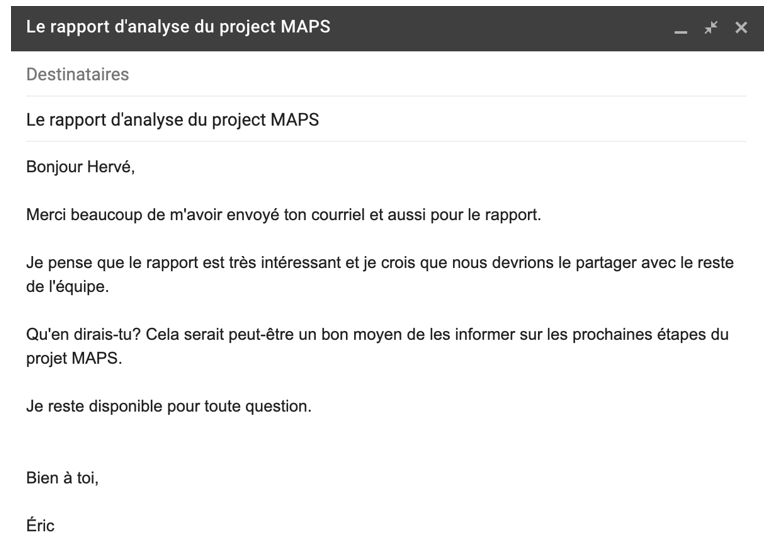
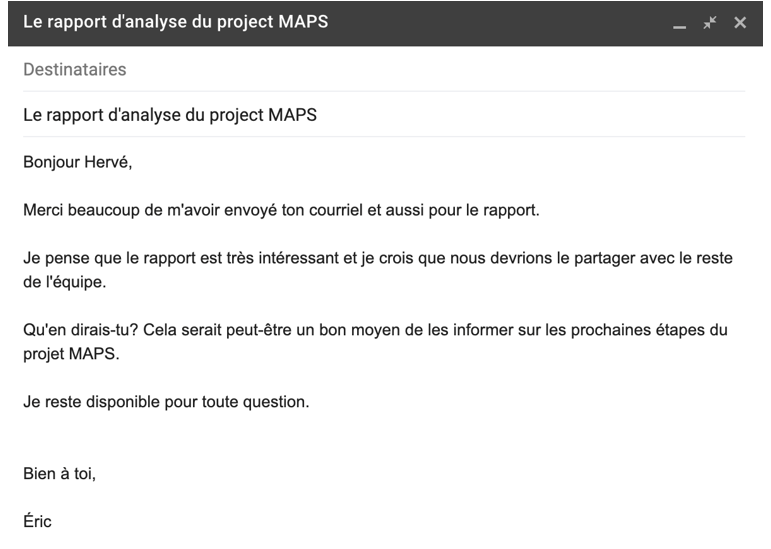

Task 4 | Courriel ou Appel? | Email or Call?
CONNECTER | 15 Minutes

LIRE | L’ABC de la rédaction de courriels
Veuillez lire le texte suivant puis répondre aux questions. (English)
L’« ABC » de la rédaction de courriels en mode pro
Plutôt que d’écrire votre courriel comme le ferait Molière, pourquoi ne pas simplement mettre l’accent sur le
message en
soi ? Toutefois, on doit être vigilant quant au type de réponse attendue. En effet, certaines situations demandent
plus
de contenu et de nuances — et vos dirigeants le savent bien. Voici quelques méthodes pour rédiger des courriels
comme le
font les cadres et dirigeants.
Répondez rapidement
Les dirigeants répondent souvent aux courriels rapidement. Recevoir une réponse dans les minutes qui suivent l’envoi
d’un courriel à un dirigeant est fréquent. Ainsi, leur temps précieux n’est pas perdu dans le triage de messages ou
dans
l’idée d’y répondre plus tard (ce qui amène souvent une manipulation répétée d’un même courriel.) Ce dernier est
donc
répondu promptement, contenant l’information attendue, pour ensuite être supprimé.
Éliminez les formules édulcorées
Les dirigeants expriment ce qu’ils ont en tête sans ambages ni besoin de diluer leur message. Par exemple, au lieu
d’introduire vos idées de je pense, ou encore de je crois ; énoncez votre opinion sans détour, comme vos dirigeants
en
ont l’habitude. Logiquement, il faudrait donc substituer : « Je pense que nous devrions augmenter le budget » par :
« Nous devrions augmenter le budget. » C’est peut-être une nuance légère à la lecture, mais elle donne un ton plus
puissant et déterminé.
Laissez vos excuses de côté
Des petits conflits aux circonstances hors de notre contrôle, les « désolé » font partie de nos habitudes
culturelles.
Au lieu de ce sempiternel désolé, optez pour une solution dynamique. Par exemple, lors d’un conflit de
planification,
employez une formule comme : « Cette plage horaire ne fonctionne pas pour moi. Que diriez-vous de 10 h ? » C’est
bien
connu que les leaders se dirigent vers la solution, et non vers le problème. Si une sorte de consolation vous est
nécessaire, utilisez une expression positive comme : « Merci d’être si patient », au lieu de la négative : « Désolé,
cela fut très long. »
Cessez d’analyser chaque mot
Les dirigeants ont tendance à écrire ce qu’ils pensent, sans sélectionner soigneusement chaque mot d’un courriel, ni
le
réviser à plusieurs reprises. Ils utilisent un ton direct qui évite toute forme de confusion. Peu de temps est
alloué à
la sélection des mots et expressions, et c’est toujours bien reçu. Si vous prenez plus que quelques minutes pour
rédiger
un courriel ; c’est que vous réfléchissez trop ou que votre contenu est trop complexe pour être communiqué par
courriel.
Ici, l’appel téléphonique s'avère généralement la meilleure forme de communication.
Source : randstad.ca
COMPRENDRE | Première lecture
Lisez l’article et répondez à ces questions. (English)COMPRENDRE | Seconde lecture
Lisez l’article encore une fois et associez chaque mot avec son synonyme. (English)CONSOLIDER | 15 Minutes

Dans la section CONNECTER vous avez appris du vocabulaire concernant les bonnes pratiques de rédaction des courriels. Cette section vous permettra de le mémoriser.
IDENTIFIER | Vocabulaire clé
Écouter puis écrivez les mots suivants. (English)TRANSLATE | Vocabulaire clé
Traduisez les mots suivants (English)UTILISER | Vocabulaire clé
Complétez chaque phrase avec le verbe approprié.
COMMUNICATE | 15 Minutes

ÉCRIRE | Un courriel efficace
Répondez à la question suivante :
Lisez le courriel ci-dessous et identifiez les actions que l’expéditeur peut faire afin d’utiliser un style plus direct.
Écrivez au moins quatre phrases afin de conseiller l’expéditeur en utilisant le vocabulaire de cette tâche.
ÉCRIRE | Un courriel efficace
Complétez la tâche suivante.
Réécrivez le courriel ci-dessous en utilisant un style plus direct.
References
- Photography on this page is courtesy of Pexels.
License
gTTS is licensed under the MIT license